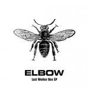
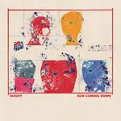
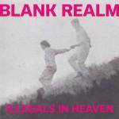

Music Reviews
-

U.S. Girls Half Free
Meghan Remy's first album with 4AD is both a revelation and a breakthrough, one that finds Remy elevating her songwriting panache while carrying a certain mysticism that seems grounded in both plausibility and commonality.
Juan Edgardo Rodriguez reviews... -

Skylar Spence Prom King
Prom King, the new album from Skylar Spence, revisits '80s music with all the youthful exuberance and bouncy sheen of the music that inspired it, shot through with a disco and contemporary dance influence that distinguishes it from the more conventional synth-pop artists currently crowding the indie market.
Bradley Hanford reviews... -

Elbow Lost Worker Bee EP
Elbow's latest release finds them missing and singing about home the way that only this band can: with warmth, expressive lyrics and catchy melodies, all tinged with a sense of melancholy that this trip home will only last for so long.
Joe Marvilli listens to Elbow return home... -

Ought Sun Coming Down
Sun Coming Down constantly engages and enthralls with an odd sense of humor, cementing Ought as one of the few contemporary post-punk acts that seamlessly merge frantic irreverence with feral intelligence.
Juan Edgardo Rodriguez reviews... -
Kurt Vile b'lieve i'm goin down
Kurt Vile drops his latest LP, and provides further evidence of his conclusive authenticity, and his position as one of songwriting’s most understated commodities.
Carl Purvis is feeling particularly pensive... -
Micachu & the Shapes Good Sad Happy Bad
Good Sad Happy Bad marks Mica Levi's return to her main project after scoring the film Under the Skin. For such an uncompromising creative it comes across as surprisingly hollow, approaching a more banal songwriting approach with a hodgepodge of unvarnished ideas that don't amount to their true potential.
Juan Edgardo Rodríguez reviews... -

Blank Realm Illegals in Heaven
Illegals in Heaven is an entirely new phase in Blank Realm’s decade-long career, one in which they’re unafraid to explore a more approachable sound without renouncing their feverish delirium.
Juan Edgardo Rodríguez reviews... -
Kagoule Urth
Nottingham trio Kagoule drop an invigorating debut displaying all the craft of a sadistic surgeon, dissecting the bones of the US 90s alternative scene into a many-headed beast with more cunning, and more dexterity than what it's superseded.
Carl Purvis reviews... -
Yo La Tengo Stuff Like That There
In Yo La Tengo's universe past and present converge as all-directions promenades, applying the same exacting standards to originals and covers alike.
Angel Aguilar reviews... -
Destroyer Poison Season
Dan Bejar's 10th solo effort is sumptuously complete, sleek and highly refined, repurposing the champagne-coated synths of Kaputt with the aid of a full band to further accentuate his high-brow witticisms.
Juan Edgardo Rodríguez reviews...